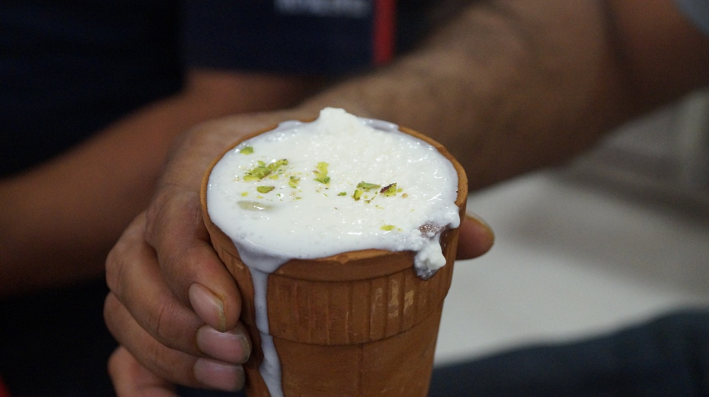

LASSI

DESCRIPTION
Lassi, a quintessential and refreshing beverage hailing from the Indian subcontinent, is a timeless classic that serves as the perfect antidote to sweltering heat. With its roots deeply embedded in Indian culinary traditions, Lassi has evolved into a versatile drink enjoyed in various forms across the region. This cooling concoction features a delightful blend of yogurt, water, and spices, offering a harmonious balance of sweet and tangy flavors. Whether flavored with fruits, aromatic spices, or simply served as a traditional salty lassi, this beloved drink is a sensory journey that invigorates the taste buds and provides a respite from the scorching sun.
INGREDIENTS
- 1 cup plain yogurt
- 1/2 cup cold water
- 2 tablespoons sugar (adjust to taste)
- 1/2 teaspoon cardamom powder
- A pinch of saffron strands (optional, for garnish)
- Ice cubes (optional)
- Fresh mint leaves for garnish
STEPS
- In a blender, combine the plain yogurt, cold water, sugar, and cardamom powder.
- Blend the mixture until it becomes smooth and frothy.
- If desired, add ice cubes to the blender and blend until the lassi is chilled and has a slushy consistency.
- Pour the lassi into glasses, garnish with saffron strands and fresh mint leaves.
- Serve the lassi immediately, relishing its cooling and rejuvenating properties, making it the perfect companion for any warm day.